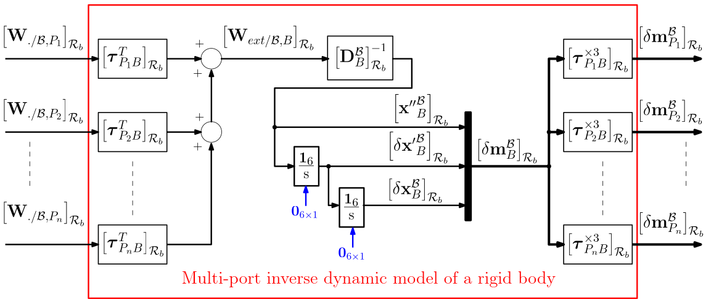
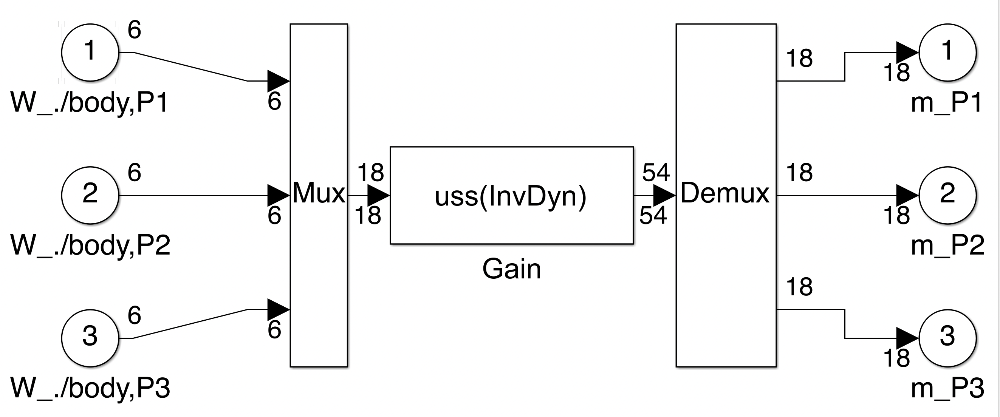

Multi port rigid free body
Multi-port rigid free body linear model.
It computes the inverse linearized dynamic model of a rigid body $\mathcal{B}$ free to move in 3-D space
- at $n$ given points,
- in its reference frame $\mathcal{R}_b $.
It results in a $(18n \times 6n)$ model between wrenches applied at the $n$ points and motion vectors at these points. This $12$-th order model includes the $6$ rigid modes.
See also: General notations, Multi port rigid body, massless connection body, 1-port NASTRAN flexible body.
Contents
Description
The Newton- Euler equations applied to a rigid body $\mathcal{B}$ at its center of mass $B$ reads:
$$ \underbrace{\left[\begin{array}{c} \mathbf{F}_{ext/\mathcal B} \\ \mathbf{T}_{ext/\mathcal B,B} \end{array}\right]}_{\mathbf W_{ext/\mathcal B,B}} = \underbrace{\left[\begin{array}{cc} m^{\mathcal{B}} \mathbf{1}_3 & \mathbf{0}_{3 \times 3} \\ \mathbf{0}_{3 \times 3} & \mathbf{I}^{\mathcal{B}}_B \end{array}\right]}_{\mathbf D_B^{\mathcal{B}}} \underbrace{\left[\begin{array}{c} \mathbf{a}^{\mathcal B}_{B} \\ \boldsymbol{\dot\omega}^{\mathcal B} \end{array}\right]}_{\mathbf{x''}^{\mathcal B}_B} + \left[\begin{array}{c} \mathbf{0}_{3 \times 1} \\ \boldsymbol{\omega}^{\mathcal B} \times \mathbf{I}^{\mathcal{B}}_B \boldsymbol{\omega}^{\mathcal B} \end{array}\right] $$
The linearized Newton-Euler equations assume that $\boldsymbol{\omega}^{\mathcal B}$ is small. The quadratic terms can be neglected, leading to these equations :
$$ \mathbf{W}_{ext/\mathcal B,B} = \mathbf D_B^{\mathcal{B}}\mathbf{x''}^\mathcal B_B \quad \mbox{or}\quad \mathbf{x''}^\mathcal B_B=\left[ \mathbf D_B^{\mathcal{B}}\right]^{-1} \mathbf{W}_{ext/\mathcal B,B}. $$
Moreover let us consider another point $P$ on the rigid body $\mathcal{B}$. Then $ \mathbf{x''}^{\mathcal B}_P=\boldsymbol\tau_{PB}\mathbf{x''}^{\mathcal B}_B$ or considering the linearized motion vector projected in the body frame: $\left[ \delta \mathbf m^{\mathcal B}_P\right]_{\mathcal R_b}=\left[\boldsymbol\tau_{PB}^{\times 3}\right]_{\mathcal R_b}\left[ \delta \mathbf m^{\mathcal B}_B\right]_{\mathcal R_b}$ (see Kinematic model on the motion vector).
It can also be shown that:
$$ \mathbf{W}_{ext/\mathcal B,B}= \boldsymbol\tau_{PB}^T \mathbf{W}_{ext/\mathcal B,P}.$$
(Indeed, due to the lever arm effect: $ \mathbf{T}_{ext/\mathcal B,B}= \mathbf{T}_{ext/\mathcal B,P}-(^*\overrightarrow{PB})\mathbf{F}_{ext/\mathcal B}$.)
Thus: $\left[ \mathbf D_P^{\mathcal{B}}\right]^{-1} =\boldsymbol\tau_{PB}\left[ \mathbf D_B^{\mathcal{B}}\right]^{-1} \boldsymbol\tau_{PB}^T\quad$ or $\quad\mathbf D_P^{\mathcal{B}}=\boldsymbol\tau_{BP}^T\mathbf D_P^{\mathcal{B}}\boldsymbol\tau_{BP}.$
The inverse dynamic model of the rigid body $\mathcal{B}$ in its reference frame $\mathcal{R}_b$ at different points $P_i$ with $i=\{1,... n\}$ can be obtain following this scheme:

Ports
The number of ports depends on the number $n$ of given points where the inverse dynamic model has to be computed.
Inputs:
- W./body,Pi: the wrenches (units: $N$ and $N.m$) applied to the rigid body $\mathcal{B}$ at the $n$ different points $P_i$ with $i=\{1,... n\}$ in the rigid body frame $\mathcal{R}_b$: $ \left[\mathbf{W}_{./\mathcal{B},P_i} \right]_{\mathcal{R}_b} $.
Outputs:
- m_Pi: the linearized motion vectors (units: $m/s^2$, $rd/s^2$, $m/s$, $rd/s$, $m$, $rd$) at the $n$ different points $P_i$ with $i=\{1,... n\}$ in the rigid body frame $\mathcal{R}_b$: $\left[\delta\mathbf{m}^{\mathcal B}_{P_i} \right]_{\mathcal{R}_b}$.
Parameters
All parameters are expressed in the body frame $\mathcal{R}_b$. Each parameter can be an uncertain parameter declared with "ureal".
The main parameters are:
- the body mass (unit: $kg$)
- the $3 \times 3$ inertia matrix of the body expressed at its center of mass $G$ (unit of each term: $kg.m^2$)
- the $3\times 1$ vector $\overrightarrow{OG}$: the position of the center of mass $G$ in $\mathcal{R}_b$ (unit: $m$)
- the number of ports (more exactly, the number $n$ of points $P_i$ with $i=\{1,... n\}$ where the inverse dynamic model has to be computed)
- eventually, the number of the port (between $1$ and $n$) which must be inverted
- the $3\times 1$ vectors $\overrightarrow{OP_i}$, $i=\{1,... n\}$: the positions of the connection points $P_i$ in $\mathcal{R}_b$ (unit: $m$).
Simulink diagram under the mask
The Simulink block is built by the initialization function in the block mask according to the parameters in the dialog box. Example with $3$ ports:
